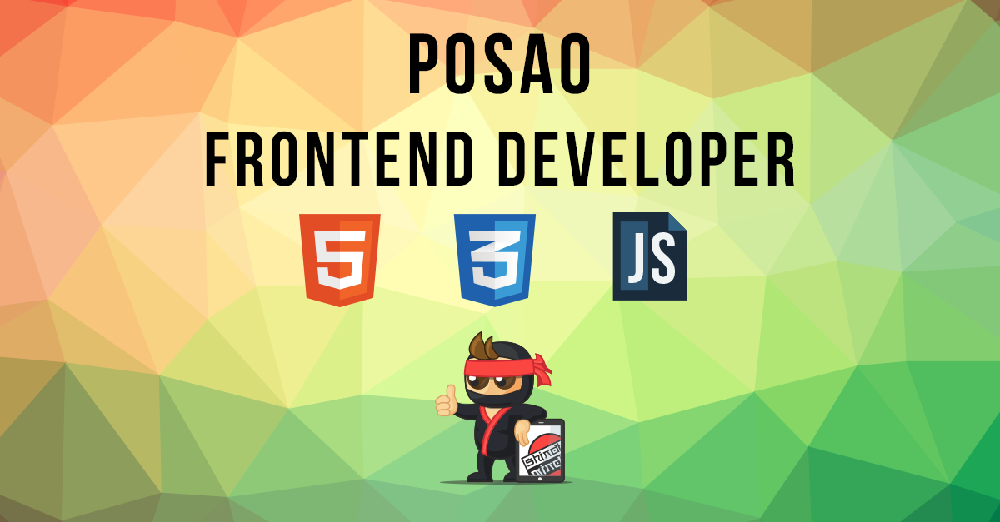
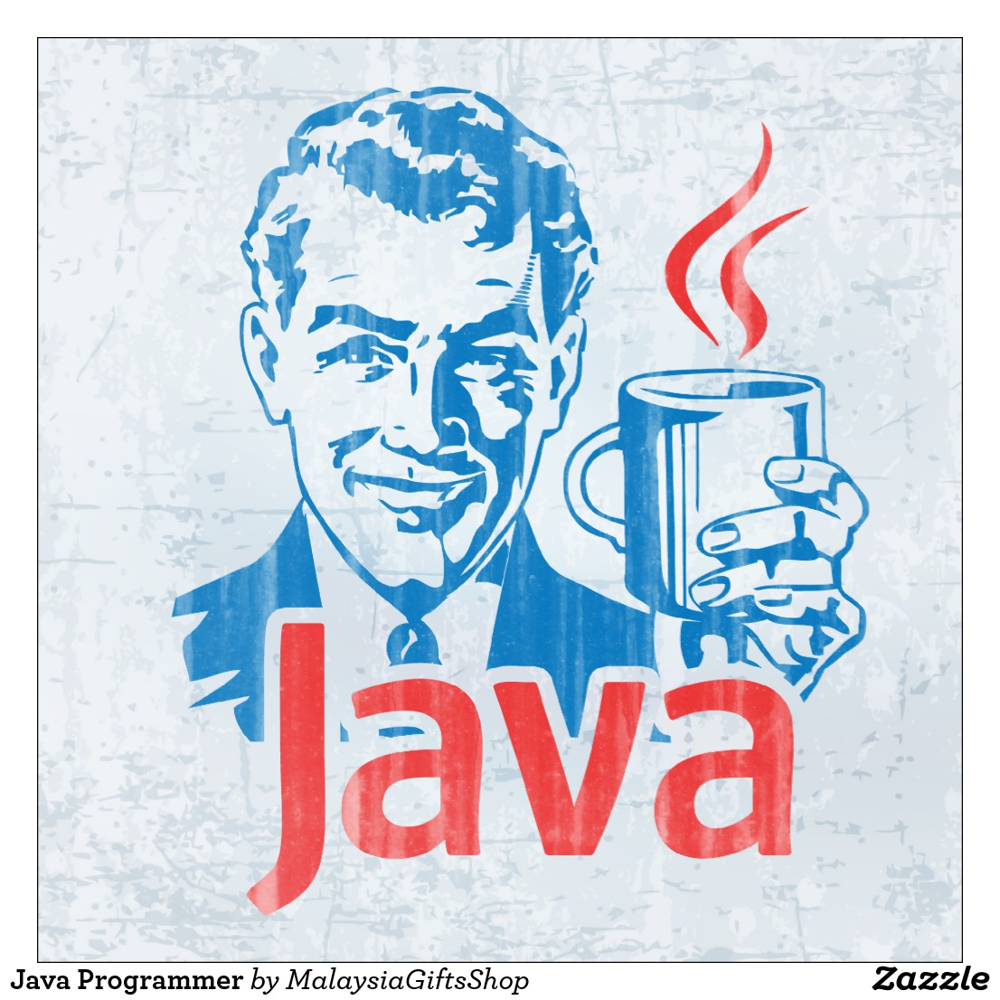
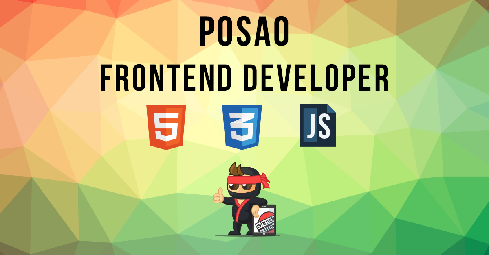
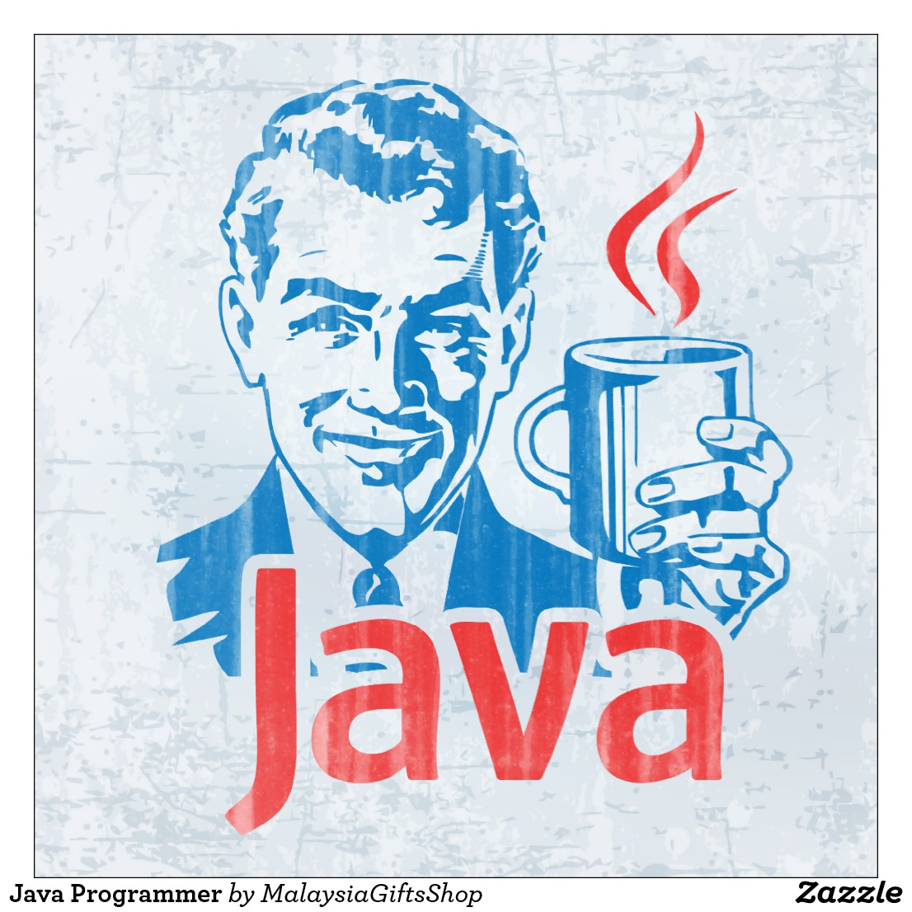
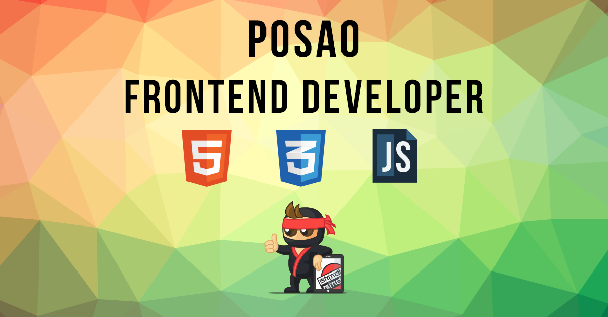
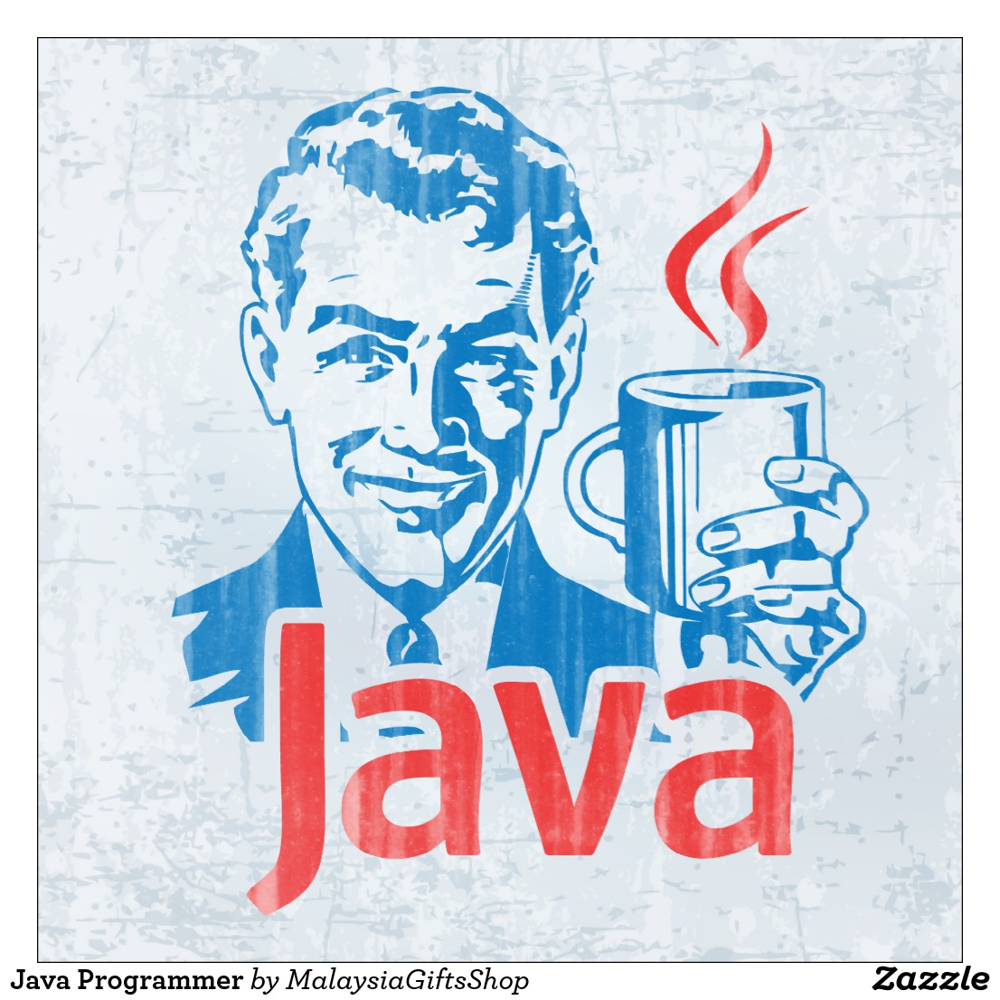
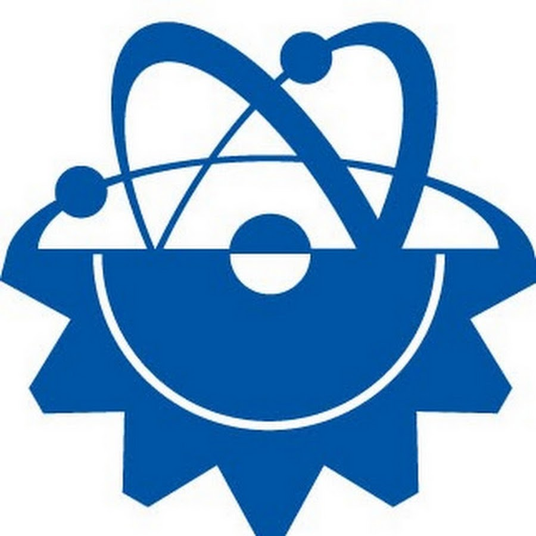

В Right Forces я уже пробовала себя во многих ролях, начинала со специалиста технической поддержки. Постепенно хотелось заниматься более разноплановыми задачами, так как рутина и однообразие не для меня. Хотелось живого общения с Заказчиками. Сейчас работаю в должности бизнес-аналитика, набираю опыт «с нуля». Но не могу сказать, что мои задачи направлены только на выявление требований и написание технических заданий. Пробую себя везде — во внедрении, техподдержке, тестировании и даже где-то в разработке. И это то, что мне нужно — разнообразие и возможность «переключиться» на что-то новое. Знаю, что в других компаниях специалисты редко в себе сочетают столько навыков и умений, как в Right Forces. Здесь же всегда есть возможность выбрать то, чем тебе действительно интересно заниматься, сменить направление деятельности. Плюс интересные проекты, возможность обучения. Очень помогает поддержка более опытных коллег — никогда не откажут в помощи. Да и вообще коллектив у нас подобрался что нужно :)
В компанию Right Forces я пришел еще в те далекие времена, когда нас было человек 15, а сам я только выпустился из университета. Сегодня Right Forces - это почти 200 человек в 6 городах России и за ее пределами. За время работы в компании я прошел все ступени от junior-разработчика до Руководителя департамента, участвовал во многих интересных проектах, изучил массу технологий, побывал в командировках в разных городах и даже сумел сам построить процесс разработки ПО в рамках своего департамента. Но главным я считаю возможность видеть результаты своей работы, ощущать радость достижений, гордость от того, что я сделал что-то и сделал это классно. Компания Right Forces - это отличный шанс для тех, кто хочет добиться успеха и готов отдаваться достижению цели до конца!
Мои основные обязанности — установка, настройка и сопровождение решений, созданных в Right Forces. Честно говоря, очертить границы должностных обязанностей не совсем просто, потому что задачи бывают очень разнообразны, каждый раз интересно разбираться в чем-то новом и мало знакомом, что помогает развиваться и расширять свои знания. Всегда присутствует желание в достижении лучшего результата, в создании еще более интересной и качественной системы. Очень помогает в работе коллектив - он у нас очень дружный. Здесь действительно важен каждый!
Мне нравится обучать других тому, что знаю сама. Нравится, когда нет возможности скучать. При этом хочется развиваться дальше, узнавать все новое и получать опыт. Хочется иметь возможность совмещать работу и все-все остальное, что только интересно! И именно возможность реализовать все это привлекла меня в Right Forces. Здесь я учусь сама, решая новые и незнакомые задачи, и обучаю других, проводя семинары. Здесь я нахожу помощь и у сидящего напротив, и у того, кто находится в другом городе. Здесь мой рабочий день может закончится и в 3, и в 6! Но даже такие важные факторы не могут перевесить всю теплоту, с которой меня здесь встретили. Right Forces - это то место, где ты чувствуешь себя важной деталью в слаженном механизме, даже если ты еще очень маленькая деталька)
НАПРАВЛЕНИЯ ДЕЯТЕЛЬНОСТИ:


КОМПАНИЯ RIGHT FORCES ЭТО:
Надёжность

Компания имеет связи как с компаниями местного и регионального уровня, так и с госудаственными структурами и траннациональными компаниями. Всё это благодаря отменному качеству нашей работы, строгому соблюдению сроков и лучшей ценовой политике.
Опыт
Компания присутствует на рынке более 10 лет. Всё начиналось с мелких заказов по автоматизации и аутсортингу и развилось в корпорацию занимающейся разработкой программ для госструктур, промышленной автоматизацией для целых отраслей промышленности, имеющей специалистов во всех областях IT. Нашу компанию обсуждают как в СМИ, так и на профессиональных встречах и форумах. Шане слово приобрело вес и в научной сфере, где мы активно сотрудничаем с сысшими учебными заведениями.
Команда специалистов

В компании работает более 8000 инженеров, аналитиков, тестировкщиков, ученых самых разных областей. И мы постоянно растём. Мы тесно сотрудничаем с ВУЗами и проводим агитационную программу для привлечения студентов на работу, а также проводим дни открытых дверей, учавствуем в конференциях и выставках, создаём мастер классы. Всё это позволяет создавать для работников самые широкие перспективы карьерного роста в самых разных областях.
Мировой масштаб
Наши центры разработки представлены по всей Европе, в том числе в Москве, Петербурге, Самара, Владивостоке и почти во всех городах-миллиониках РФ. Также мы имеем центры тестирования качсетва и поддержки продуктов в америке, австралии, индии, китае и японии. Офисы продаж же есть почти во всех крупных городах Евросоюза и России и в большинстве столиц мира.
Передовые технологии
Наша компания занимается разработкой практически во всех областях информационных технологиях и даже открывает новые - наши кафедры при университетах по праву считаются самыми престижными и передовыми. Мы сотрудничаем в наших разработках с доцентами и проффессорами их МГУ, ИТМО, СГАУ, СПбГУ, а также их коллегами из университетов Германии, Великобритании, Франции, Чехии и Болгарии. Нас по праву сичтают пионерами промышленного использования IoT и HPC в промышленных мастштабах и повседневной жизни. Наши специалисты регулярно отправляются в команлировки как заключить новый договор и рассказать о наших продуктах, так и провести лекции в самых разных уголках мира и привлечь новые кадры.
В ногу со временем
Сердце компании это её персонал и мы знаем об этом - в нашей компании существует отдельный корпус, отвечающий за переквалификацию и обучение кадрового состава. Все работники без исключения раз в полгода проходят курсы переквалицикации, а таже всегда имеют возможность получать дополнительное образование в стенах компании. Мы предлагаем крусы как стандартных технологий из IT сферы и курсы английского, так и лекции по псоледним тенденциям и направлениям. Благодаря этому наш работник - это человек, постоянно занимающийся саморазвитием и образованием, скаждым годов становясь всё опытнее, обладая постоянно обновляемым багажом знаний. Для нас человек - это не просто винтик в механизме для зарабатывания денег - это коллега, товарищ, единомышленник.